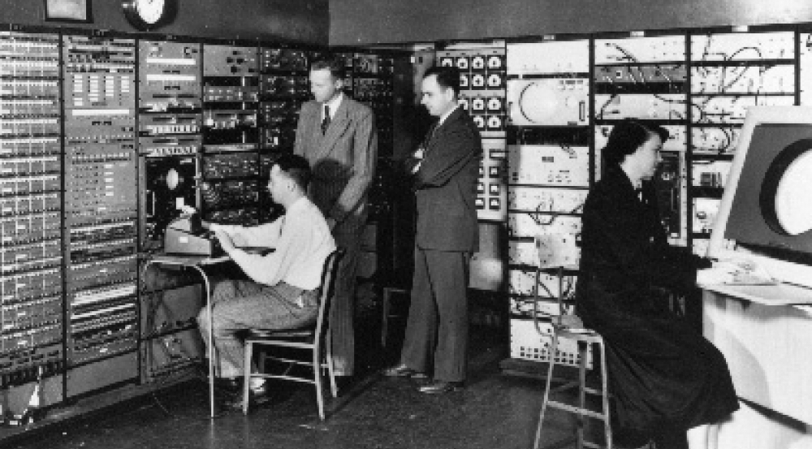
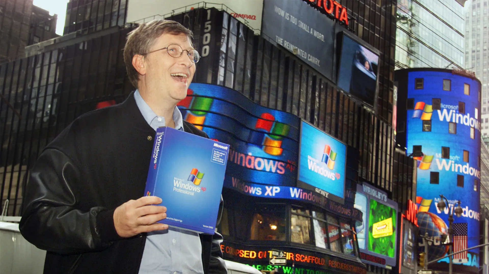

The internet is a global network of interconnected computers and devices that use standardized communication protocols to exchange data and information. It allows users to access a vast array of resources and services, including websites, email, file sharing, online communication tools, and much more. The internet facilitates communication, collaboration, information dissemination, entertainment, and commerce on a global scale.
The history of the internet
This is a simplified history of the internet.
This references:
- NYU Professor Laine Nooney's History of Media and Communication lectures
- NYU Professor Effie Rieper's Intro to Web Development lectures
- Wikipedia
In the 1950s and 60s, different theories of computer networking emerged, such as SAGE, packet switching, and time-sharing. This research culminated into the development of ARPANET in 1969, which was the first computer communications network. It was funded by the Advanced Research Projects Agency (ARPA) of the United States Department of Defense.

ARPANET was a network that faciliatted time sharing computer access. It created the possibility of a shared research culture and communication between researchers. Importantly, ARPANET relies on the idea of communication. Its informational and scientific goals were to facilitate time-sharing computer access between ARPANET sponsored researchers and to create a shared research culture and communication between ARPANET sponsored researchers. However, it was also funded by the Pentagon for military research.
ARPANET was initially conceived as a non-commercial project and was largely funded by the American state. ARPANET spread across the country incorporating research sites and institutions nationwide and eventually internationally. In 1983, ARPANET adopted TCP/IP protocols, standardizing networking, and some consider this the "birth" of the internet. In 1989, the World Wide Web — a system of hyperlinked documents accessed via the internet created by Tim Berners-Lee in Europe — was proposed for a non-commercial expansion of the internet that would make it more free and open for non-expert users.
In the 1990s, though ARPANET was initially conceived of as a research tool, entrepreneurs began to see commercial potential. Ban limiting commercial activity was lifted and the internet became open to commercial operation. ISPs, search engines (like Yahoo and Google), browsers, e-commerce, and online services emerged in the 1990s allowing for the increasing popularization of the internet.
In the late 1990s, internet-related businesses and investments surged in what was called the dot-com boom. Companies like Amazon, Google, and eBay emerged during this period. Broadband internet technologies also became more accessible to consumers, offering faster and more reliable connections compared to dial-up.

In the 2000s, social media platforms such as Facebook, Twitter, and YouTube, transformed how people interacted and shared content online. Mobile internet usage surged with the proliferation of smartphones and mobile apps, enabling users to access the internet on-the-go.
In the 2010s and after, the internet was integrated into everyday objects, leading to the Internet of Things (IoT) revolution. Smart devices, wearable technology, and interconnected systems became prevalent, creating new opportunities and challenges related to data privacy, security, and connectivity. The future of the internet continues to evolve with advancements in artificial intelligence, virtual reality, and 5G technology shaping the digital landscape.